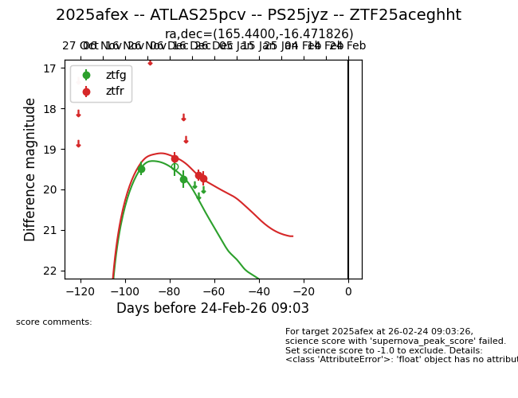
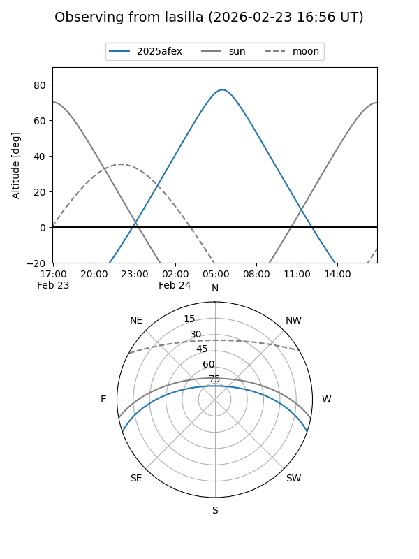
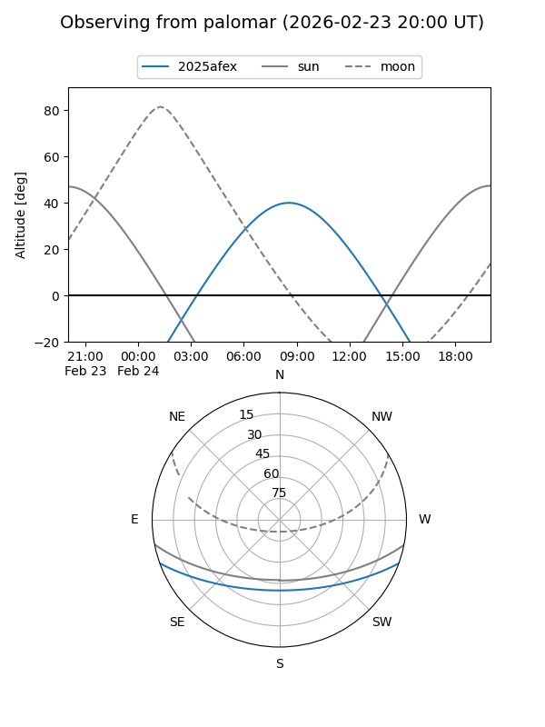
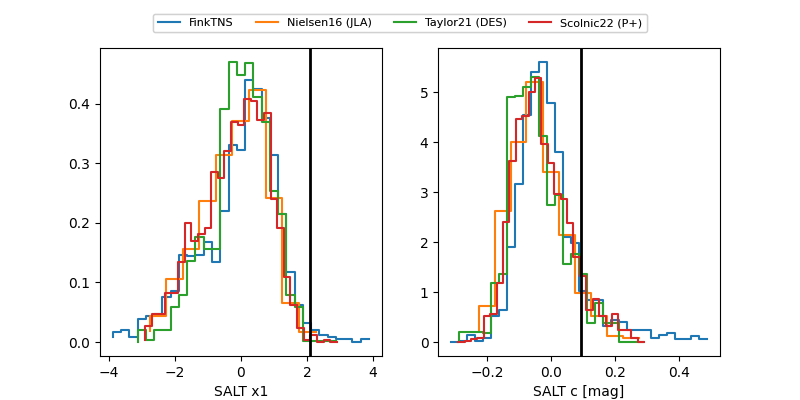

2025afex
Target 2025afex at 2025-12-30 22:44
Aliases and brokers:
FINK: fink-portal.org/ZTF25aceghht
Lasair: lasair-ztf.lsst.ac.uk/objects/ZTF25aceghht
ALeRCE: alerce.online/object/ZTF25aceghht
TNS: wis-tns.org/object/2025afex
YSE: ziggy.ucolick.org/yse/transient_detail/2025afex
alt names
ZTF25aceghht (ztf,fink_ztf)
2025afex (tns,yse)
ATLAS25pcv (atlas)
PS25jyz (panstarrs)
Coordinates:
equatorial (ra, dec) = 165.4400,-16.47183
equatorial (HMS+DMS) = 11:01:45.61,-16:28:18.57
galactic (l, b) = (268.3469,+38.92424)
Flags:
Photometry:
last ztfg=19.75, ztfr=19.73
2 ztfg, 3 ztfr detections
Lightcurve

Visibility


Additional plots
